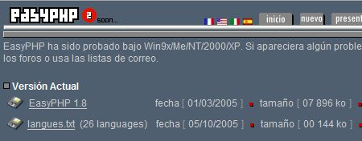
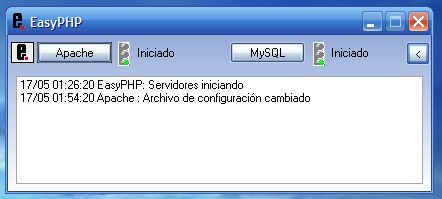
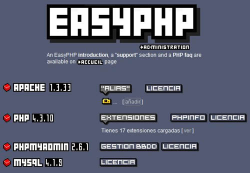
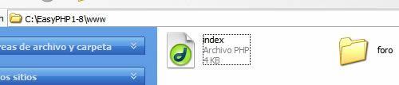
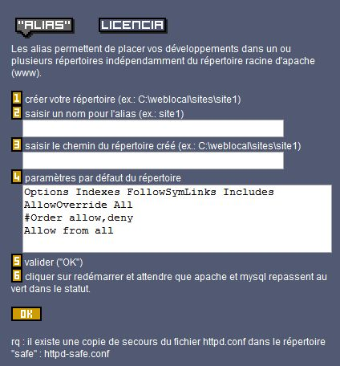
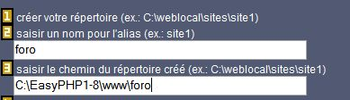
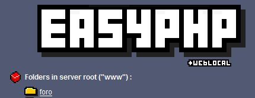
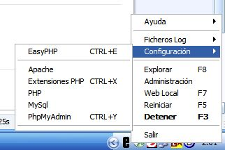

Un servidor como este nos permite realizar las pruebas en "local" (no conectados a Internet) de nuestras aplicaciones, ya sea que incluyan bases de datos, php, flash, html, javascript, etc.
Por lo general, para poder realizar un host local con las caracteristicas dadas, es necesario instalar varios programas como Apache, Mysql, PHP, PhpMyAdmin.
Si se quiere se pueden instalar por separado (que seria muy trabajoso).
En este caso voy a explicar la instalación de EasyPHP, un paquete que incluye todas esas aplicaciones.
Quiero aclarar que tener un host local no implica simular el tiempo de descarga de nuestras aplicaciones, pero sí el desempeño en el servidor.
Descarga
En primer lugar bajan el programa EasyPHP
Si se quiere también pueden descargar las diversas traducciones que existen.

EasyPHP es una aplicación de Código Abierto. Al querer descargarlo, van a ser transferidos al sitio de descargas de SourceForge.
El peso total del archivo es de unos 8 MB aproximadamente
Instalación
Doble click sobre el archivo descargado. Siguen todos los pasos, indican la ruta de instalación (recomiendo instalarlo en C:\ ó en Mis documentos, no en Archivos de programas, debido a que vamos a tener que ir agregando carpetas a medida que vamos probando nuestros desarrollos).
Finalmente una vez que hallamos terminado la instalación, EasyPHP va a abrirse.
La primera acción que realizará será buscar actualizaciones en Internet.
Aqui algo importante. Si poseen un firewall o cortafuegos, seguramente les saldran 2 precauciones:
La primera es que EasyPHP va a tratar de conectarse a Internet.
La segunda es que EasyPHP va a tratar de actuar como servidor.
Tenemos que habilitar las dos opciones para que EasyPHP funcione.
Esta es la apariencia del programa:

Las acciones seguidas que realizará el programa serán habilitar Apache y Mysql.
Si los dos semaforos están en verde, es porque todo marcha corectamente.
Seguido es esto hacemos click derecho sobre el icono de EasyPHP que se situa en la bandeja del sistema y elegimos la opción administración.
Luego se nos va a abrir nuestro navegador e iremos a una página como la siguiente:

Agregaremos las aplicaciones que queremos hacer correr sobre nuestro Host local.
Para eso, ya debemos tener preparada la carpeta con los archivos que querramos correr. Por ejemplo, supongamos que queremos correr en forma local un foro hecho con phpBB.
Para agregar el foro a nuestro servidor debemos en primer lugar ir a la carpeta www aloja en el directorio donde hallamos instalado EasyPHP. Luego debemos pegar la carpeta foro dentro de la carpeta www, como se muestra a continuación:

El paso siguiente será agregar el foro a Apache.
Para eso, en la misma página de administracion de EasyPHP, debemos ir a añadir, como se muestra aqui:
Luego iremos a una página similar a la siguiente:

En el primer rectángulo introducimos como vamos a llamar a la aplicación que vamos a correr, en este caso "foro".
En el segundo cuadro introducimos la ruta donde se encuentra la carpeta foro.
Finalmente le damos OK.

Ya tenemos configurado Apache para que pueda correr nuestra aplicacion foro.
Ahora, para entrar a la instalación de nuestro foro, debemos hacer clic derecho sobre el icono de EasyPHP en la bandeja del sistema y elegir la opcion Web local. Tambien pueden tipear sobre la barra de navegacion http://127.0.0.1/.
Iremos a una pagina donde veremos todos las aplicaciones que hemos configurado para correr sobre el servidor.

No queda más que hacer click sobre la aplicacion que queramos correr, y listo!
Seguramente, al correr aplicaciones como como un foro, debamos configurar otras caracteristicas, como la base de datos por ejemplo.
Para eso hacemos click derecho sobre el icono de EasyPHP en la bandeja del sistema, luego vamos a configuración y elegimos que es lo que queremos configurar (PHP, MySql, PhpMyAdmin; extensiones)

Bueno eso es todo, espero que hallan entendido, salu2!